kibana 操作-Discover、版本：5.6.7
第一次進入畫面
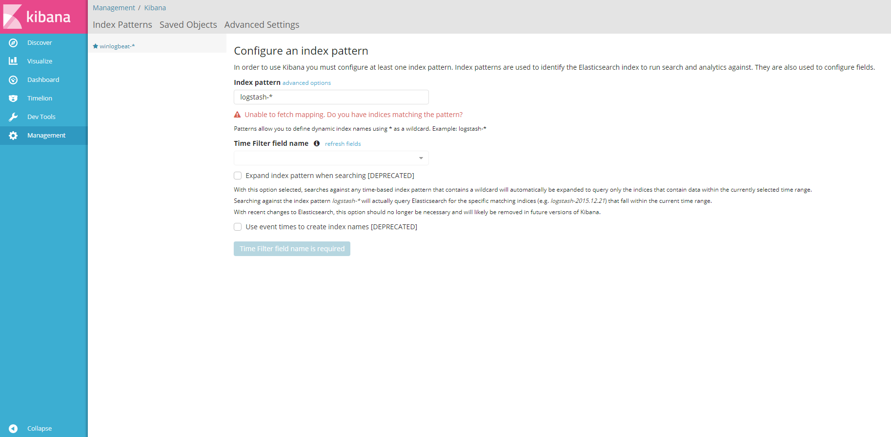
設定 index，本文章適用預設所以是 winlogbeat，Time Filter field name 選擇 @timestamp
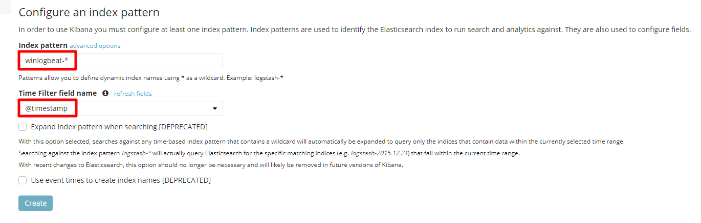
設定好後畫面
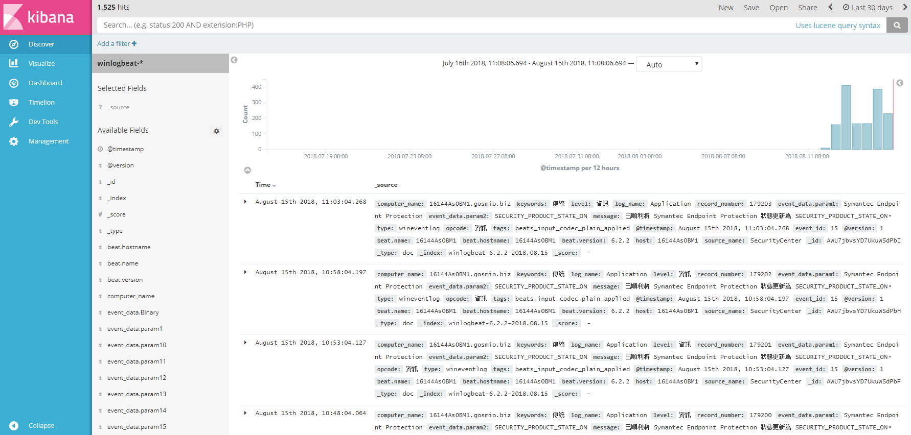
Discover : 做資料查詢，並檢視各索引下的記錄內容及總記錄筆數，本文章分成 5 區將一一作介紹
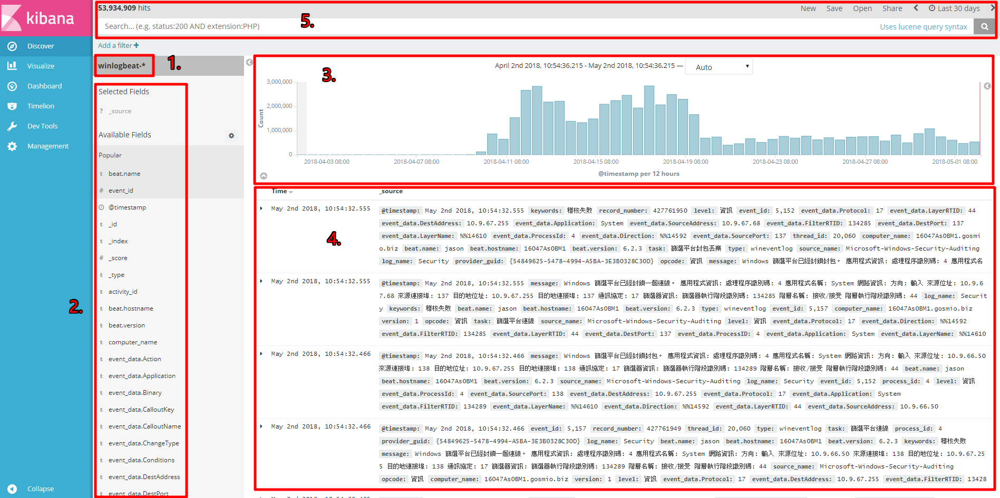
1. Index : 純粹看目前所在的 index 是哪一個 ( 不再另外作介紹 )
2. Avaliable Fields : 搜索 index 下所包含的欄位
3. Timestamp : 資料時間，可用於特定時間區間資料量觀察，直接選取可以查看想要時間範圍內的 log
4. source : 也就是我們先前所儲存的資料內容，可以展開查看更詳細內容
5. 搜尋條件儲存 : 預設 ”*“ 搜尋 index 下所有紀錄，設定需要 log 時間並儲存
各區介紹
2. Avaliable Fields : 搜索 index 下所包含的欄位
可以選擇 add 加入，顯示自己想看的欄位
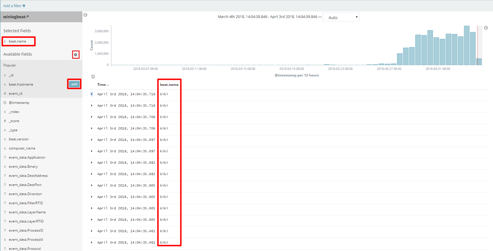
點選 Available Fields 的齒輪可以篩選欄位，以更快查詢需要的 log
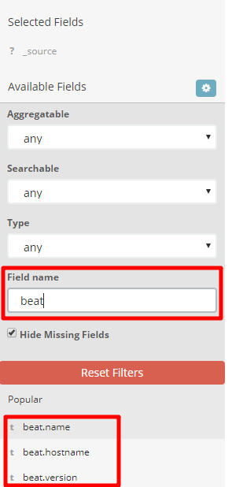
如果不需要可以按 remove 移除
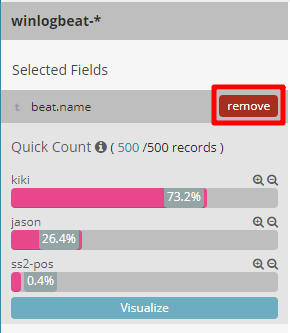
點選放大鏡 + 可以直接在 source 訊息裡顯示你要的欄位
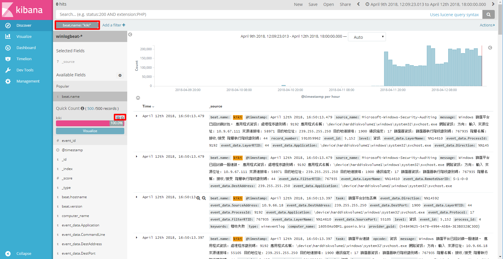
Add a filter 可以加入自己想看的獨欄位的一種條件做 log 查詢
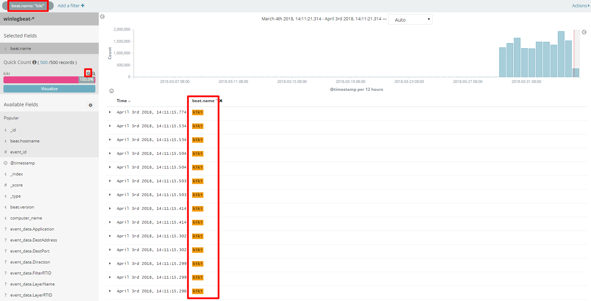
當加入一個欄位，可以點選 Actions 做欄位的調整
Enable 啟用、Disable 禁用、Pin 釘選、Unpin 取消釘選、Invert 加入或刪去欄位、Toggle 隱藏、Remove 移除
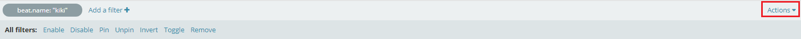
左上搜尋條件角滑鼠移上去會顯示圖案，圖案的功能其實跟點選 Actions 後出現的差不多
打勾：取消後 source 就不會找出你所設定欄位
放大鏡 -：刪去這項欄位
圖釘：釘選
垃圾桶：刪除
框框：編輯欄位
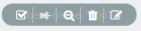
3. Timestamp : 資料時間，可用於特定時間區間資料量觀察，直接選取可以查看想要時間範圍內的 log
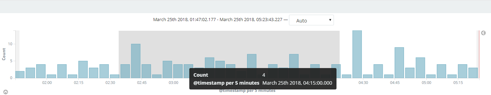
中間下拉式選單，可以選擇時間間隔
millisecond 毫秒、second 秒、minute 分鐘、hourly 每小時、daily 每日、weekly 每週、monthly 每月、yearly 每年
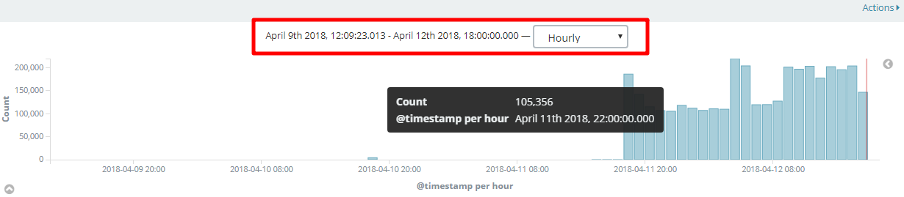
4. source : 也就是我們先前所儲存的資料內容，可以展開查看更詳細內容
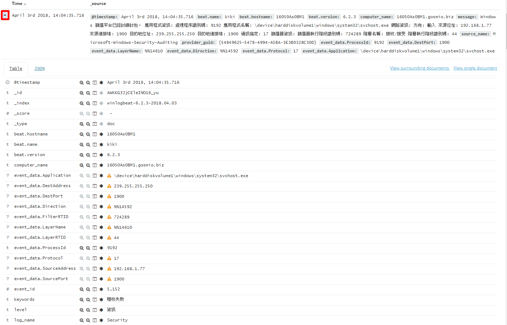
5.搜尋條件儲存 : 預設 ”*“ 搜尋 index 下所有紀錄，設定需要 log 時間並儲存。
點擊右上時間會拉開 3 種時間選項
Quick：快速選取，選擇範圍時間
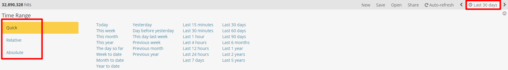
Relative：相對時間，直接選擇想要的前後時間
點選 set to Now 清空，打勾 round to the day 頭時間設為 00:00 結尾時間設為 23:59
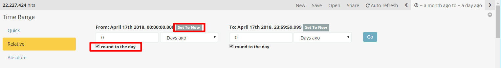
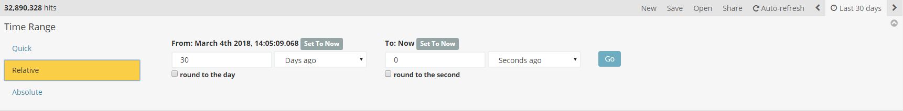
Absolute：絕對時間，以日期來選擇前後時間
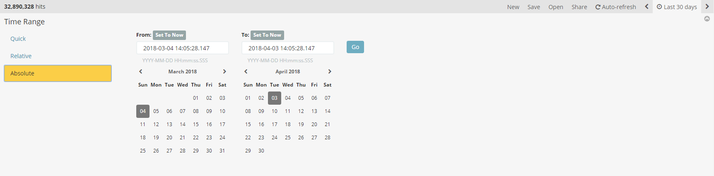
操作搜尋 log
簡單查詢語法：
條件：AND、OR、NOT
分組：(“a” OR “b”) AND “c”
通配符：* 表示0到多、? 表示0或1
字段搜尋：key: “value”
範圍搜尋：key: [1 TO 10]
轉義字元：+ - && || ! () {} [] ^ “ ~ * ? :
不記得語法 kibana 本身也有給連結，搜尋欄的最右邊點擊
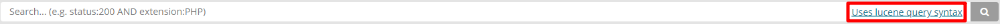
點擊後畫面
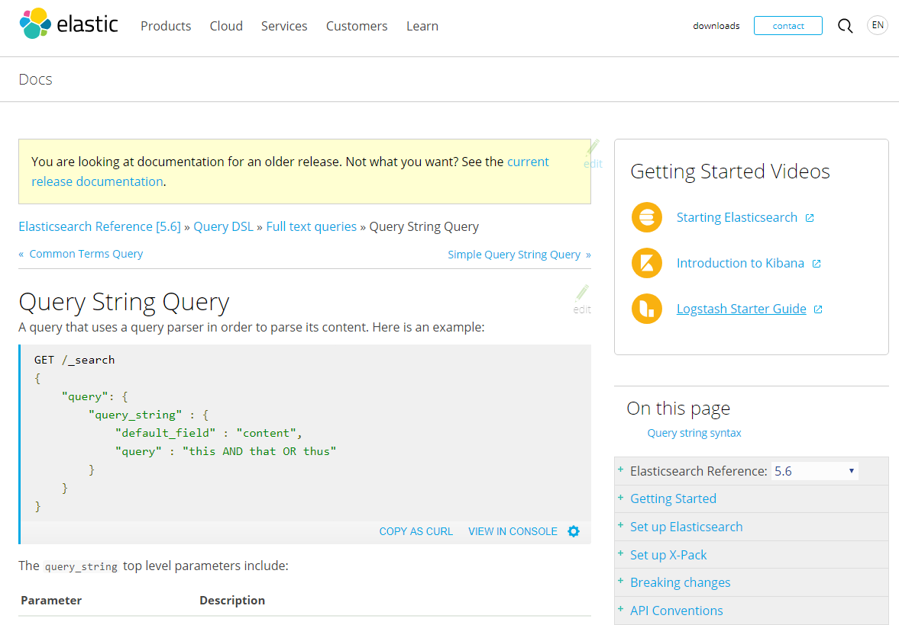
下條件搜尋，左上角會顯示有幾筆 log
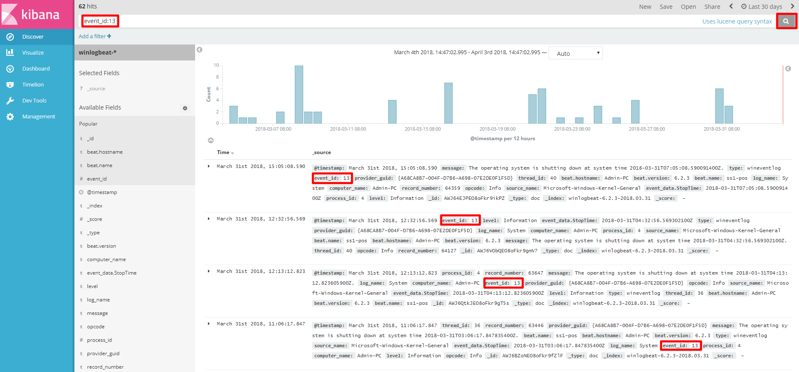
點擊 Save 頂部菜單中的選項，命名然後單擊 Save 保存，保存為當下設定好欄位條件狀態
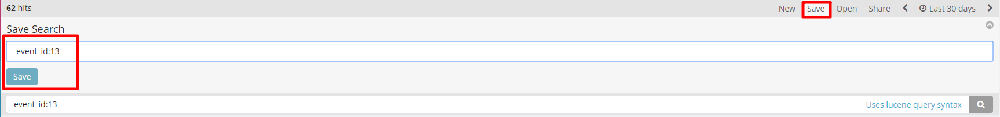
點 open 打開設定好欄位條件，可以更快查詢
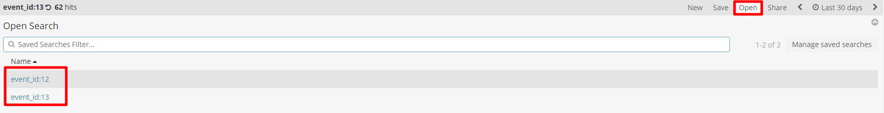
New 重新回到沒有任何條件狀態
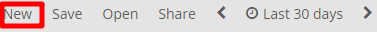